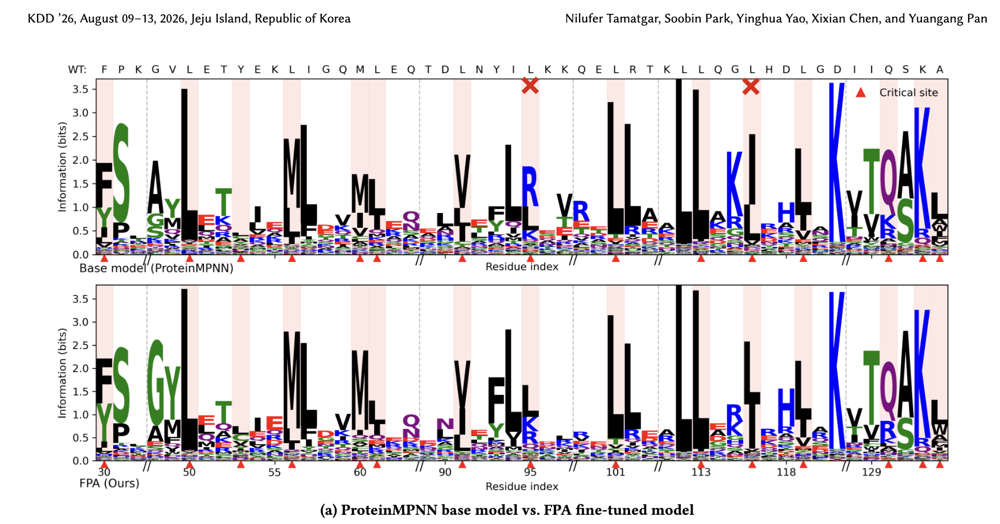
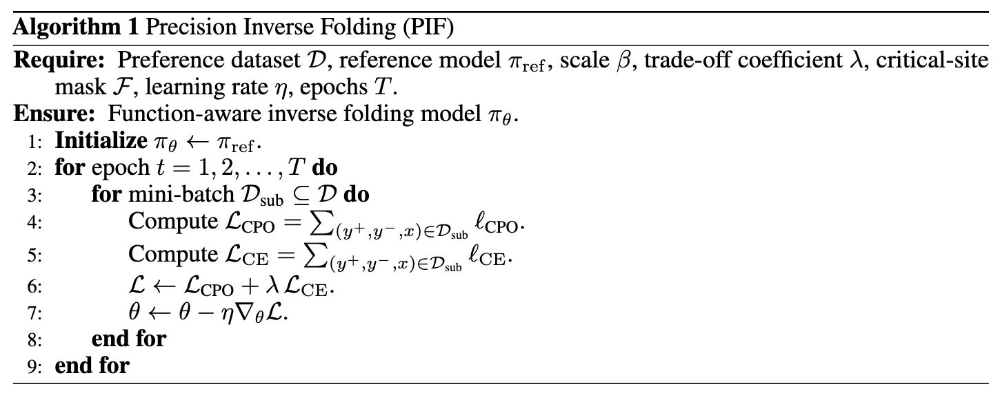
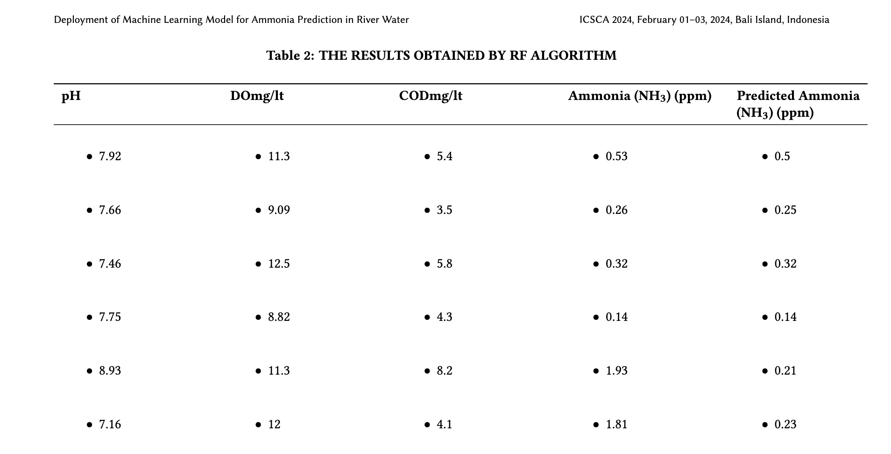
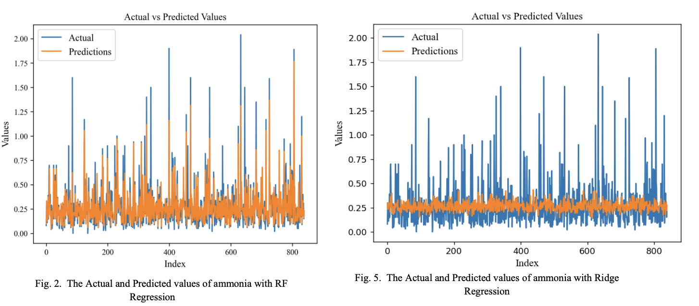

About
As an AI Researcher at A*STAR CFAR, I specialized in deep generative models for protein engineering and drug discovery. I contributed to a sequence–structure co-design framework that uses functional guidance from both sequence and structure to design proteins with targeted functions, preserving the intended 3D structure and the conformations of critical residues. My research advanced Transformer, diffusion, and graph-based neural architectures through supervised fine-tuning, preference optimization, and ranking objectives, addressing the challenge of learning from sparse experimental measurements to maximize the precision of a model's top-ranked predictions, with all models validated on real-world experimental data.
Earlier in my career, I built a strong engineering foundation spanning full-stack application development, machine learning deployment, hardware and wireless systems, including IoT architectures, wireless sensor networks, and wideband antenna design.
Education
MSc in Computer and Communications Engineering
School of EEE, Nanyang Technological University (NTU), Singapore.
BTech, Electronics and Communication Engineering
Manipal Institute of Technology, MAHE. Specialization in Machine Learning and Data Science.
Publications

ImageFrom Structure to Function: Preference Alignment for Function-Aware Protein Inverse Folding
SIGKDD Conference on Knowledge Discovery and Data Mining (KDD) 2026 CCF A
International Conference on Learning Representations (ICLR), GEM Workshop 2026

ImagePrecision Inverse Folding: From Low-Order Mutant Measurements to Higher-Order Variant Prioritization
Conference on Neural Information Processing Systems (NeurIPS), AI4DD Workshop 2026 Accepted

ImageDeployment of Random Forest Algorithm for prediction of ammonia in river water
ACM Digital Library 2024

ImageSkills and Tools
Programming & Systems
Python (NumPy, Pandas, Scikit-learn), SQL, C++ (familiar), MATLAB
Linux, Bash/Shell Scripting, Git, Docker, HPC, CUDA
Frameworks & Tools
PyTorch, JAX (familiar), Hugging Face Transformers, REST APIs, Streamlit
LLMs & Agentic AI
Fine-tuning (SFT/DPO/LoRA), Agentic AI & Workflows, LangGraph, Prompt Engineering, RAG
Machine Learning & Deep Learning
Regression, Transformers, Graph Neural Networks, Generative Models (Diffusion, Autoregressive), Reinforcement Learning
Molecular Visualization & Structural Analysis
PyMOL, UCSF Chimera/ChimeraX
AI-Driven Protein Design & Structure Prediction
ProteinMPNN, LigandMPNN, ESM-IF, ADFLIP, RFdiffusion, AlphaFold 3, ColabFold
Awards
EEE Excellence Award
School of Electrical and Electronic Engineering, Nanyang Technological University (NTU), Singapore. Recognised for Academic Excellence, Research contributions, Leadership and community engagement during the MSc programme.
Academic Excellence Award
Awarded for securing first place in Pre-University examinations at New Era High School, Panchgani.
Leadership
Director of Sports, Recreation and Well-being
Graduate Students, School of EEE, NTU Singapore.
Mentor, Junior Youth Spiritual Empowerment Program
Guided a group of 20 children in Udupi and Satara districts, India.
Extra-Curricular
Sports
Badminton, 2024 to 2026. First prize in tournaments organised by the Graduate Academy of Nanyang Technological University, the Indian Society in Singapore and the Singapore Tamil Society.
Manipal Marathon, (2019,2020). First prize in Women's 5K Category.
Cultural
Helped organize and run several cultural events, and performed in group and featured dance performances at school and university showcases.
Interests
Passionate about wildlife and natural ecosystems, and an avid reader across psychology, philosophy, historical non-fiction and fiction.